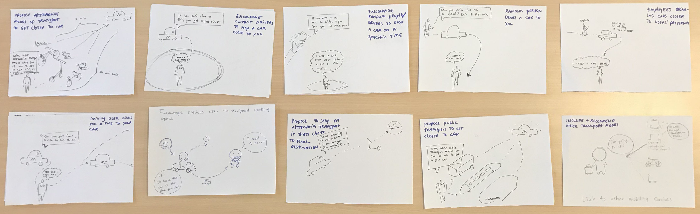
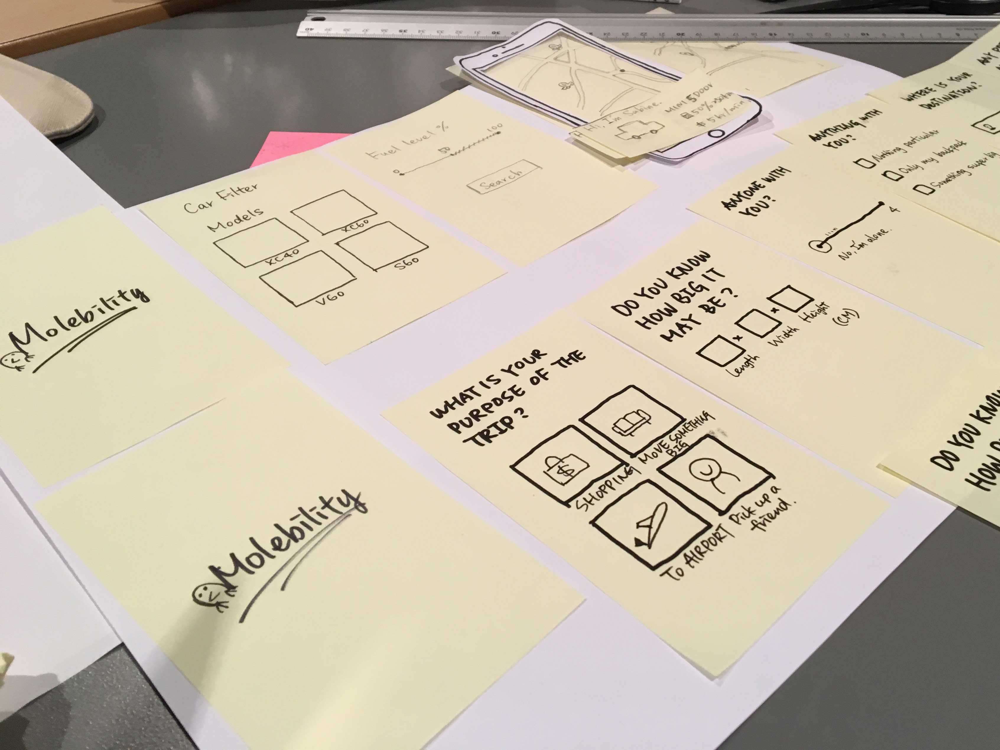
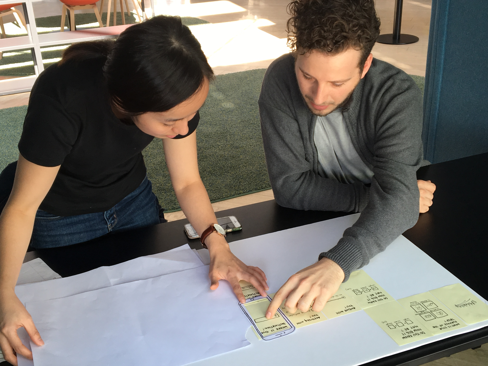
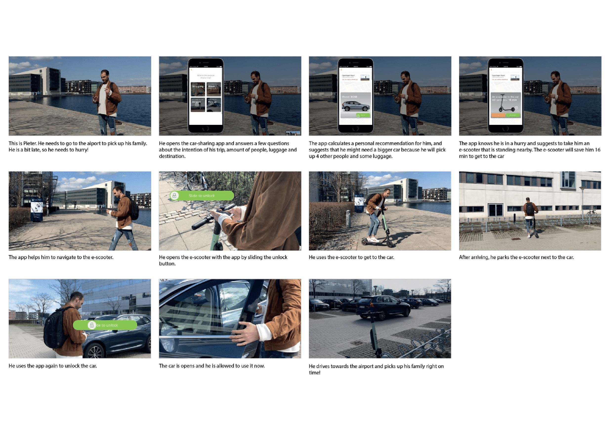
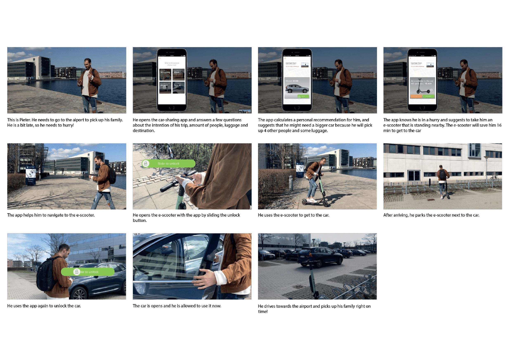

Project Context
Title: Personalize car-sharing service experience Type of work: Service Design & UX Design Date: 2018.12-2019.05 [6months]
"Move" was a project that collaborated with Volvo UXCC (User experience competence center). It was an app that provided a personalized experience for car-sharing service users. From the business perspective, providing a personalized experience was a popular topic with additional business value and positively improved service experience. We started by discovering what and how to personalize a digital car-sharing service can provide additional value to users. Through investigating the current car-sharing service, we found that users find it difficult to access their vehicles easily. From the user's perspective, "Move" gave personal recommendations for finding the car they want and their preferred way to reach it. From a systemic standpoint, it helped to improve the integration of different mobility service providers. The project was graded full score for 12/12 due to its solid design research and critical reflection on the design process.
My role was to conduct user research, transform insights to potential design solutions, design and test the service concept. I collaborated with another service designer Piet Overgoor to deliver this project.
Solution
Our final service concept
Process
Discovered the car-sharing experience
At the beginning of the project, we didn’t have a clear mission or specific goals for personalizing the car-sharing experience. Without pre-existing insights, we conducted service safari and user interviews to discover user experience from various perspectives.
Gathered insights through researcher’s first experience
Service safariWe picked up the leading local car-sharing service, Green Mobility & Drive Now (currently renamed “Share now”), to experience the service by ourselves. It aimed to identify two customer journeys and compare the differences between the two brands. To make it closer to a realistic user experience, we set up a purpose for using the car. The research started from signing up the service until payment and leaving the service.


In the end, we were able to identify the user journeys of car-sharing services, joint pains, gains in the trips, and different touchpoints. It also gave additional knowledge for preparing the questions of user interviews.

Mapped out the current user journey
We used a customer journey map to synthesize the research findings from two service safari and map out the user's actions, pains, gains, touchpoints to interact with, and user's data collected by the services.

More data from car-sharing user’s experience
User InterviewWe conducted six interviews with users who have used a car-sharing service. The goal was to understand their motivations, pains, and gains of using the services and explore the opportunities or problems in the current car-sharing services.


Framed the right problem to tackle and identify the target group
We gradually narrowed down our focus area from both user and systemic perspectives. From the users' perspective, we started synthesizing the data collected from the user research and framing the target group for developing concepts. From a systemic perspective, we generated the actor map to present the relevant actors in Copenhagen's current mobility ecosystem.
Data Synthesis
We started with a session to synthesize the qualitative data. It aimed to interpret the information gathered from our previous user research and identify potential problem areas to develop a solution.
The process started by sharing interview results to build up a common understanding in the team. We added quotes that emerged from our Service Safari to have more data to work with.

Next, we clustered them based on their similarities and from that concluded several findings.


However, we noticed that not all problems have a strong connection to personalized services. Therefore, we used polarization to evaluate the potential for personalization.

Refined the problem statement
We analyzed different pains on the customer journey and transformed them into several design challenges to have a proper scope for ideating a new service concept.
 Initial problem statement
Initial problem statement
How might we design for a personalized experience of a Volvo car-sharing service?
Refined problem statementHow might we personalize a car-sharing service to make it easier/quicker to get to a car-sharing vehicle?
Defined target group
The target group described a group of people who may have an interest in the new service. It is made by the research findings in the previous phase. It summed up the users' behavior, motivation, and barriers to interacting with the service. It aimed to give a more precise focus on who we are designing for.

Defined relevant actors in the mobility ecosystem
At the systemic level, we generated an actors map that helped understand who the relevant actors in the current mobility ecosystem of Copenhagen are. It was based on observations of the services on the streets and online research.

Developed the new service concept
After framing the right problem, we started by ideating potential solutions, evaluating ideas, and four rounds of prototyping and user testing to refine the final solution.
Brainstormed design ideas
To generate enough ideas in a short time, we used “10 plus 10” to come up with ideas and find different variations of them. In the first round, we brainstormed with ten ideas. In the second round of ideation, we generated ten personalized variations of the previous ones, resulting in twenty different ideas.
Filtered the idea to prototype
We build up the Idea Portfolio to rank all the ideas based on two variables, “Impact” and “Feasibility.” It is more efficient to evaluate the ideas with stakeholders with more manageable numbers in the later stage.

Involved stakeholders in making decision
We involved stakeholders' opinions about the design ideas to evaluate how those ideas are relevant for our stakeholders and choose one from them to prototype.

Visualized new user journey with low-fidelity prototype
We chose Desktop Walkthrough to communicate an initial idea and get the user and stakeholder feedback. It aimed to validate the concept from both systemic and user perspectives without looking into detailed interactions. We discovered suggestions from both sides and brought them to the next round of prototyping.


Dived into the digital touchpoint in the service
To determine if personalization gave additional value and presented more complex interactions,
we prepared two versions of the paper prototype; the first one was the current service without any personalized element.
The second one was the new service we are developing.


Created Immersive service experience
To explore how a single touchpoint affected the rest of the user journey and gave a more immersive service experience, we conducted a service walkthrough with three users. We prepared a clickable mockup, the connected vehicle, and the car to help individual users finish their trips using our car-sharing service. It gathered more precise comments related to the personalization, and the users can fully address if the service gave a proper response to their needs.
Validated the concept on a larger scale
We invited users to view the service concept video and gave feedback on it. This study aimed to scale up the research scope, validate the service concept, and identify potential risks in the system. It attracted a target audience who had never used a car-sharing service but potentially may be interested in the service. The research was conducted both online and physically at the same time to gather more opinions. We identified the unforeseen challenges, detailed suggestions from users in this round of testing.

Communicated the service concept effectively and efficiently
We used four service representation tools to communicate various levels of the new service system. It aimed to share the concept in a holistic perspective, different information requirements in the developing process, and diverse target audiences' interests.
 

.png)

Learnings
My learnings for overcoming the challenge in the project and reflection of the design process
Main challenge
During the project, our collaborative team was dismissed in ⅔ of the design process. To overcome this challenge, we quickly arranged a meeting with the team. We aligned the resources we needed and what it was still available shortly to wrap up the project. We adjusted our schedule for prototyping, listed down the tasks that we need to do in a more feasible setting up. In the end, we managed to execute the new plan and deliver the project with outstanding performance.
Reflection and further improvement
After reviewing the design process, there were two things that I think I could have done better.
First, to recruit the target users outside our network. Due to the project's limited time and budget, we only recruited users from our network. It led to the result that we barely gathered negative criticism from the users. It would be better to reach out to the people outside our network and get more unbiased opinions, for example, to recruit interviewees from various Facebook interest groups, such as local communities, student groups, or other people close to our target users.
Second, to involve at least one stakeholder's opinion outside the organization into the design process. In our design concept, we proposed various service providers to co-offering the service. However, it was a pity that we didn't involve any of them in our design process. Suppose we could have invited a product manager from an e-scooter company. In this case, we could have discovered if the current concept created impact from their perspectives and other initiatives to push this concept into practice.